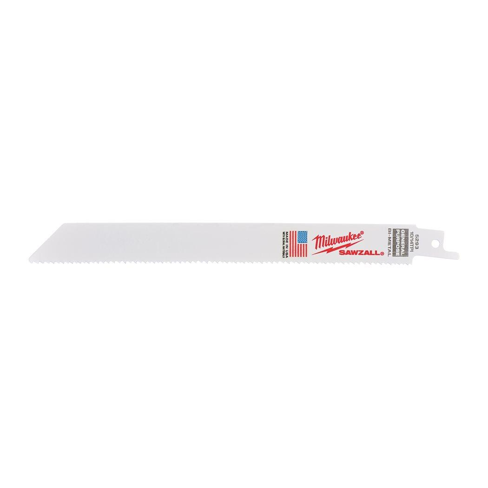

| Blade length (mm) | 200 |
| Max. cutting capacity non-ferrous metals (mm) | 3 - 11 |
| Max. cutting capacity plastic pipes (mm) | ⌀ 3 - 160 |
| Max. cutting capacity steel (mm) | 3 - 11 |
| Max. cutting capacity wood with nails (mm) | 5 - 175 |
| Pack quantity | 5 |
| Ref. No. | S1122VF |
| Article Number | 48475193 |
| EAN | 045242368327 |